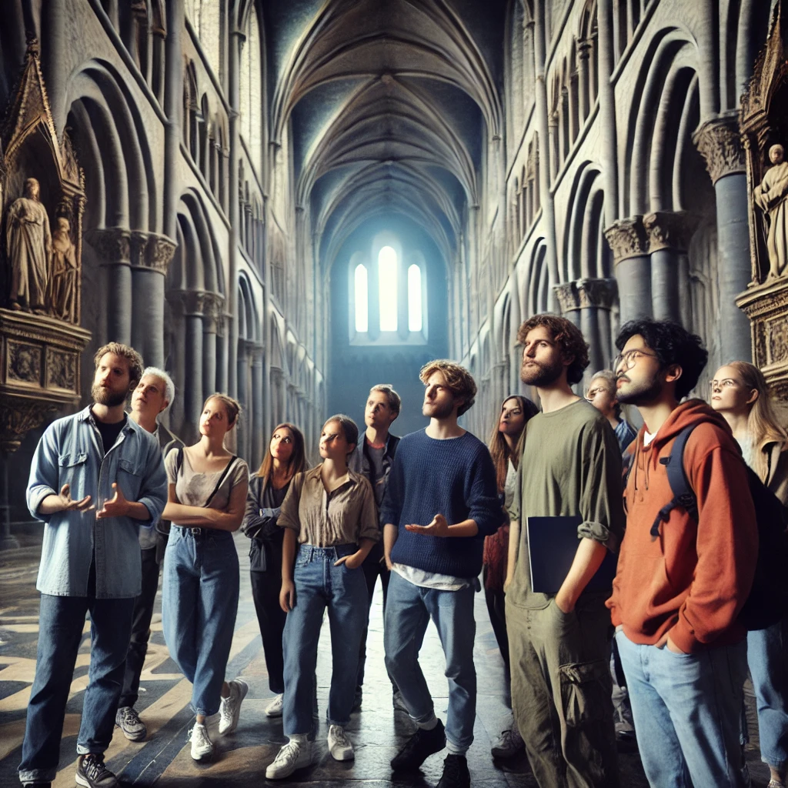

Välkommen till den härliga föreningen Gyas Vänner!
Vi är några historienördar i alla åldrar och på alla nivåer, både nybörjare och proffs som älskar historia och att mötas och prata historia!
Vi är lokaliserade i Skåne så mycket är centrerat kring Skånes historia men vi har inga gränser egentligen!
Välkommen och utforska vårt material och våra aktiviteter och bli gärna medlem!
Vi har många aktiviteter för oss, bland annat har vi tex föreläsninger eller utflykter, se aktiviteter för mer info!
Tex var vi i somras en utflykt i Lund:
Först en sväng på kulturen:

Sedan en sväng i domkyrkan
Och till sist ett besök på historiska museet

Gyas vänners närmaste aktiviteter:
-
20/3-25 16:00 på Malmöhus slott, Malmö
Rundtur på Malmöhus slott. Vi träffas ute i foajen 10 minuter innan det börjar.
-
3/4-25 12:00 Lunchföreläsning på Lunds stadsbibliotek
Föreläsning om Lunds medeltid, Lunds stadsbibliotek.
-
10/5-25 13:00 Glimmingehus
Rundtur på Glimmingehus, vi samlas på gården 10 minuter innan.
-
4/6-25 12:00
Samling vid Ales stenar. Sten Markusson föreläser om Ale stenar. Tänk på vädret och välj bra kläder.
-
20/7-25 08:00 Parkinering vid Höörs mitt
Föreningens årliga utflykt. Detta året går turen till österlen. Turen går till Kungagraven, Kikvik och Simrishamn. Närmare beskrivningen kommer när det närmar sig